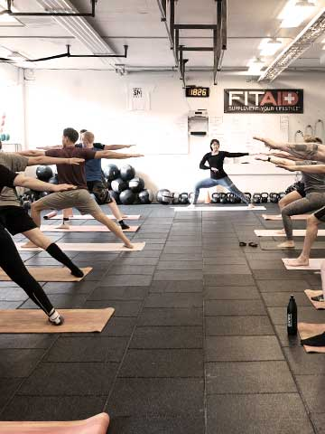
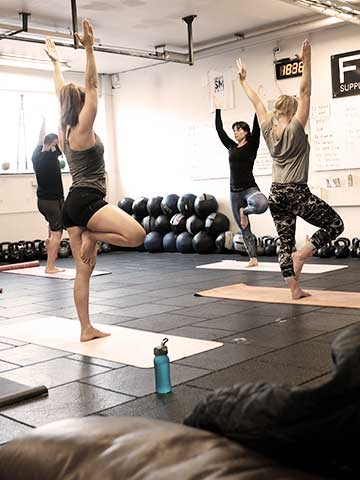
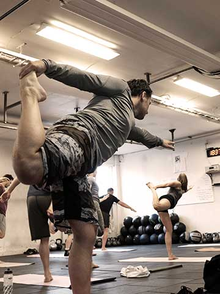
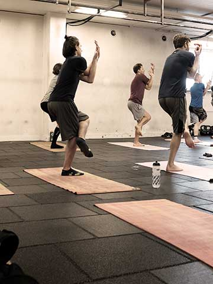
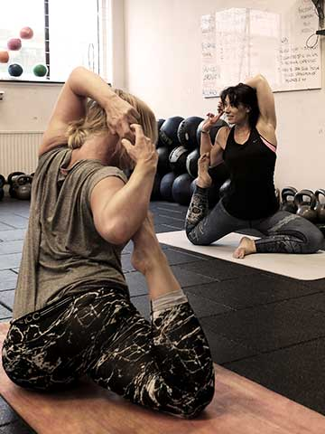

<body><!DOCTYPE html lang="sv-SE"><meta charset="utf-8"><html><head><title>Skill - Snatch</title><link rel="stylesheet" href="reset.min.css"><link rel="stylesheet" href="screenly.min.css"><style>.text{height:965px;margin-top:-5px}.text h1{font-size:8em;margin-top:0}.text .intro{margin-top:0}li.big{font-size:3em}</style></head><body><div class="content bg-dark"><div class="images-3">  </div><div class="images-3">  </div><div class="cfmb-bg-color-2 text"><h1>YOGA</h1><p class="intro">Första söndagen varje månad</p><p class="intro">10:30-11:30</p><ul class="dates"><li class="big">19 maj</li><li>9 juni</li></ul></div></div></body></html></body>